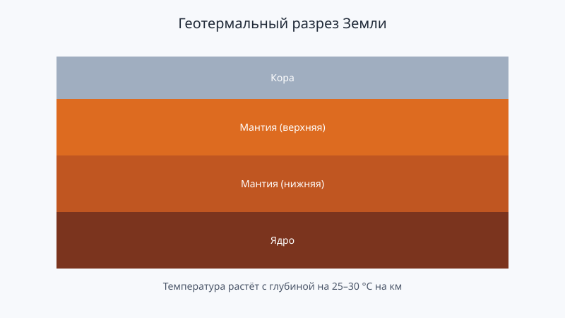
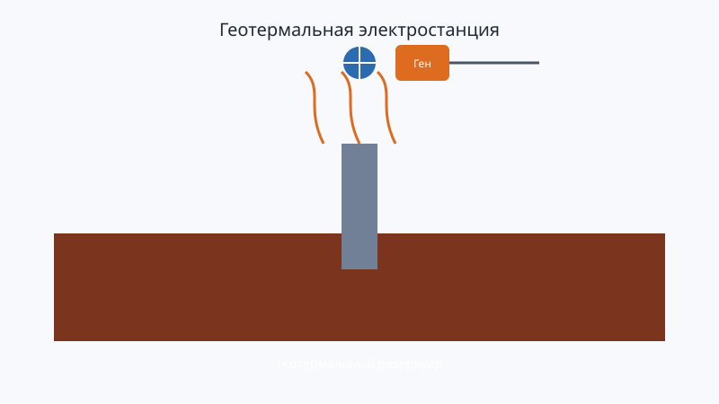

Глава 5. Геотермальная энергия
5.1 Геотермальная энергия как источник
Геотермальная энергия — это тепло, генерируемое в недрах Земли и доступное на поверхности в виде горячих источников, гейзеров или через скважины. Она относится к возобновляемым источникам энергии (ВИЭ), поскольку тепловой поток из недр Земли практически неисчерпаем в масштабах человеческой цивилизации.
Источником геотермального тепла является распад радиоактивных элементов в мантии и ядре Земли, а также остаточное тепло от формирования планеты. Температура недр растёт с глубиной — в среднем на 25–30 °C на каждый километр.
Геотермальные ресурсы делятся на низкотемпературные (до 90 °C), среднетемпературные (90–150 °C) и высокотемпературные (выше 150 °C). Высокотемпературные ресурсы используются для выработки электроэнергии, низкотемпературные — для прямого теплоснабжения и с помощью тепловых насосов.

Геотермальная энергия характеризуется стабильностью выработки, независимостью от погоды и времени суток, что выгодно отличает её от солнечной и ветровой энергетики.
5.2 Геотермальные электростанции
Геотермальная электростанция (ГеоЭС) — электростанция, использующая тепло недр Земли для нагрева рабочего тела и выработки электроэнергии. Основные типы ГеоЭС: паровые (на сухом паре), на бинарном цикле и с использованием пароводяной смеси.
Паровые ГеоЭС используют пар, непосредственно получаемый из геотермальных скважин. Бинарные ГеоЭС используют низкокипящее рабочее тело, что позволяет применять среднетемпературные ресурсы.

ГеоЭС характеризуются высоким КИУМ (часто 0,7–0,9), длительным сроком службы и низкими эксплуатационными затратами, однако требуют значительных капитальных вложений и доступны не во всех регионах.
5.3 Тепловые насосы и прямое использование тепла
Значительная часть геотермального потенциала приходится на низкотемпературные ресурсы. Для их использования применяются тепловые насосы — устройства, переносящие теплоту от источника с низкой температурой к потребителю с более высокой температурой, затрачивая меньше энергии, чем выдаёт.
Помимо тепловых насосов, низкотемпературное геотермальное тепло используется напрямую: для отопления зданий, теплиц, бассейнов, а также в промышленных процессах. Это направление часто экономически эффективнее выработки электроэнергии.

Комплексное использование геотермальных ресурсов — сочетание выработки электроэнергии, теплоснабжения и тепловых насосов — позволяет достичь наибольшей эффективности.
Проверка знаний
-
Что такое геотермальная энергия?
Тепло, генерируемое в недрах Земли и доступное на поверхности в виде горячих источников, гейзеров или через скважины.
-
Как изменяется температура недр с глубиной?
Температура растёт с глубиной — в среднем на 25–30 °C на каждый километр.
-
На какие группы делятся геотермальные ресурсы по температуре?
Низкотемпературные (до 90 °C), среднетемпературные (90–150 °C) и высокотемпературные (выше 150 °C).
-
Какие основные типы геотермальных электростанций существуют?
Паровые (на сухом паре), на бинарном цикле и с использованием пароводяной смеси.
-
Что такое тепловой насос?
Устройство, переносящее теплоту от источника с низкой температурой к потребителю с более высокой температурой, затрачивая меньше энергии, чем выдаёт.
-
Какие преимущества у геотермальной энергетики?
Стабильность выработки, независимость от погоды и времени суток, высокий КИУМ, длительный срок службы.